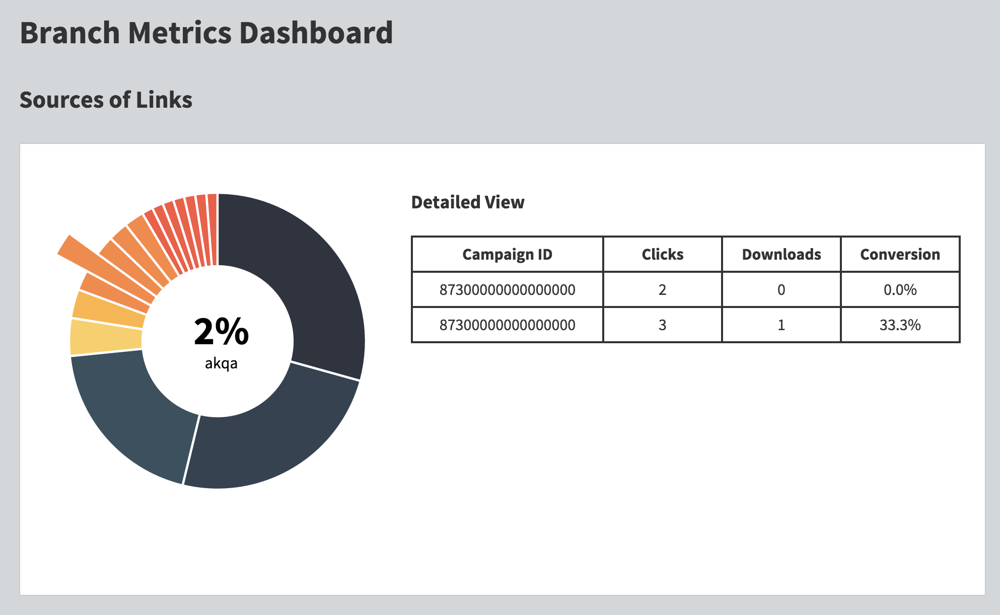
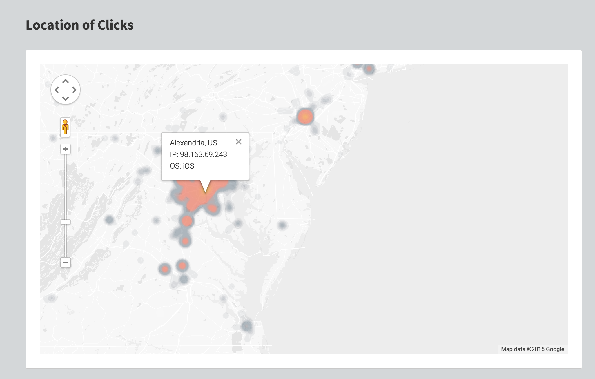

This was a project made at TreeHacks using a dataset from Branch Metrics, a startup that helps businesses create better app deep links. My team and I used D3, Highcharts, and the Google Maps API to create meaningful visualizations of where users were coming from, and we ended up winning Branch's API prize.

Part of what I did included building a heat map of all items in the dataset. I used Python and R to clean the data and then backtraced the IPs to plot each location on the map. One of the challenges I faced was getting less dense data points to show up with adequate contrast, since the vast majority of clicks were centered around one region.
